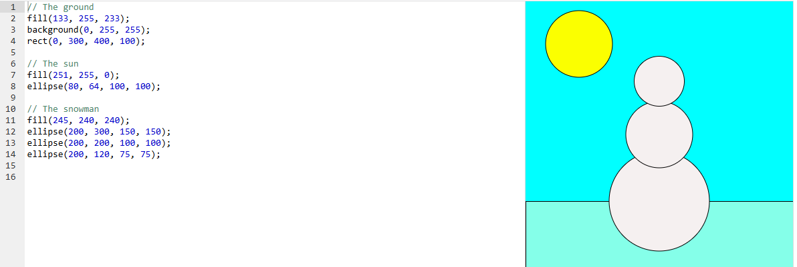

Día nevado soleado
Una escena completa con cielo, suelo, sol y un muñeco de nieve formado por tres círculos. Combina fondo, rectángulo y elipses con distintos colores.
Resultado
Código
Código del proyecto de Khan Academy. En js/dia-nevado.js está envuelto en setup() para funcionar con p5.js en una página web.
// The ground
fill(133, 255, 233);
background(0, 255, 255);
rect(0, 300, 400, 100);
// The sun
fill(251, 255, 0);
ellipse(80, 64, 100, 100);
// The snowman
fill(245, 240, 240);
ellipse(200, 300, 150, 150);
ellipse(200, 200, 100, 100);
ellipse(200, 120, 75, 75);Conceptos que se practican
| Elemento | Qué hace |
|---|---|
fill() antes de background() | background() pinta todo el lienzo; el fill() previo sigue activo para el rect() del suelo. |
rect(0, 300, 400, 100) | Un rectángulo que ocupa todo el ancho en la parte baja: el suelo. |
Tres elipses apiladas | Cuerpo, torso y cabeza del muñeco, cada una más pequeña y más arriba. |
Borde por defecto | Sin noStroke(), las figuras conservan su contorno negro. |
Captura del editor original
